Compare e Compre
Aplicativo de delivery criado durante a pandemia para comparar preços em supermercados, apoiar compras mais conscientes e conectar a jornada do cliente com a operação de entrega.
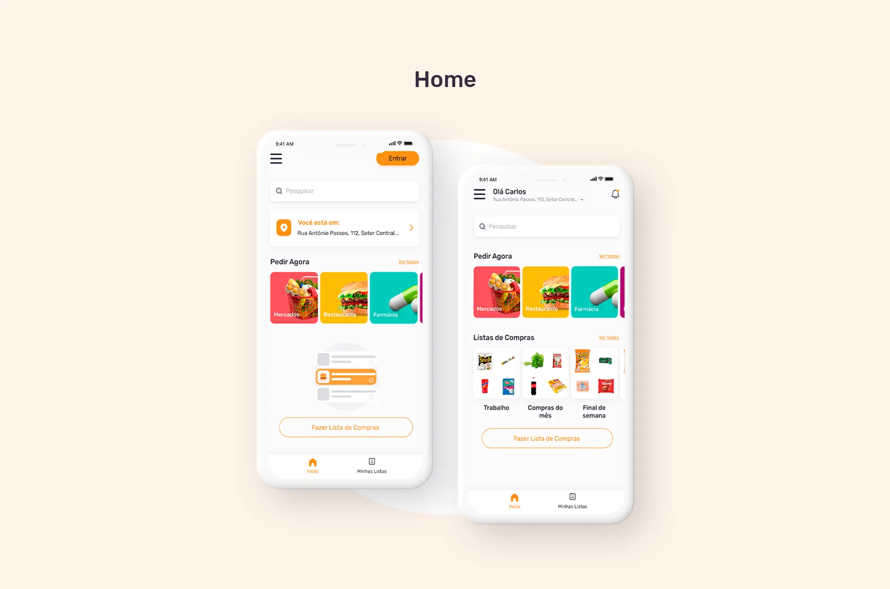
Comparar preços em tempo real
Com o aumento do consumo consciente e a necessidade de economizar, comparar preços antes de comprar se tornou ainda mais importante. A proposta do Compare e Compre foi reunir supermercados, produtos, listas de compra e entrega em uma experiência mobile simples, reduzindo o esforço de pesquisa e tornando a escolha mais transparente.
Perfis para entender dores e necessidades
A etapa de usuários ajudou a criar empatia com os diferentes públicos que usariam o aplicativo. O estudo considerou pessoas com rotinas, objetivos e níveis de familiaridade digital diferentes, sempre olhando para economia, praticidade e confiança na compra.
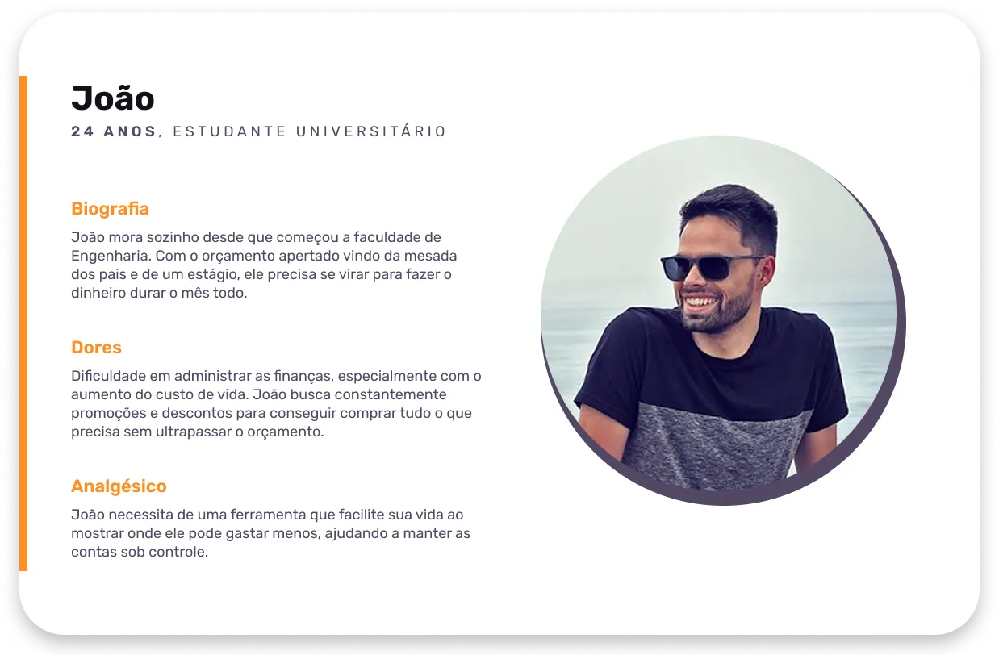
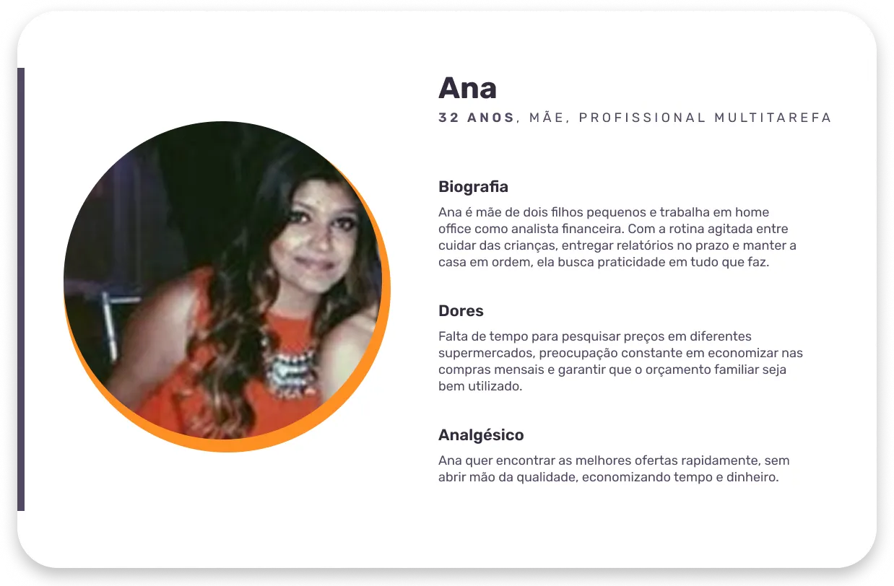
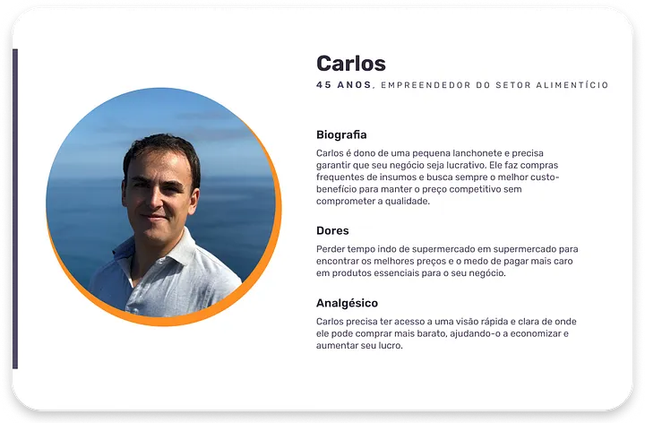
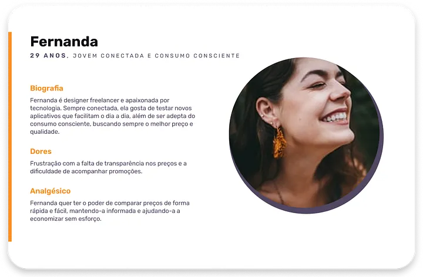
Pesquisa e problema
O projeto nasceu da oportunidade de facilitar compras de mercado em um contexto de alta demanda por delivery. O desafio era permitir que o usuário encontrasse produtos, montasse listas e comparasse valores antes de decidir onde comprar, sem abrir vários apps ou fazer contas manualmente.
Fluxos para cliente e entregador
No app do cliente, o fluxo vai do login até a conclusão do pedido: cadastro, listagem de mercados, produtos, criação da lista de compras, comparação de preços e finalização. Para o entregador, o protótipo cobre recebimento de solicitações, rotas, retirada do pedido, perfil e acompanhamento das entregas.
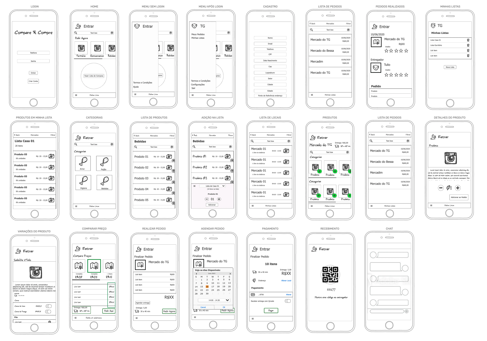
Cliente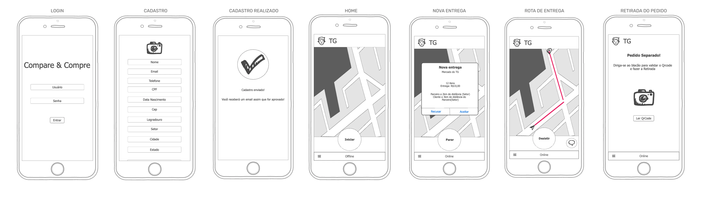
EntregadorLogo
Além das telas, o projeto pediu a criação de um logotipo que comunicasse compras em mercado e comparação de preços. A marca une a letra C, a cesta de compras e o símbolo de comparação. A identidade usa amarelo para energia e dinamismo, com roxo como apoio visual para trazer contraste, confiança e modernidade.
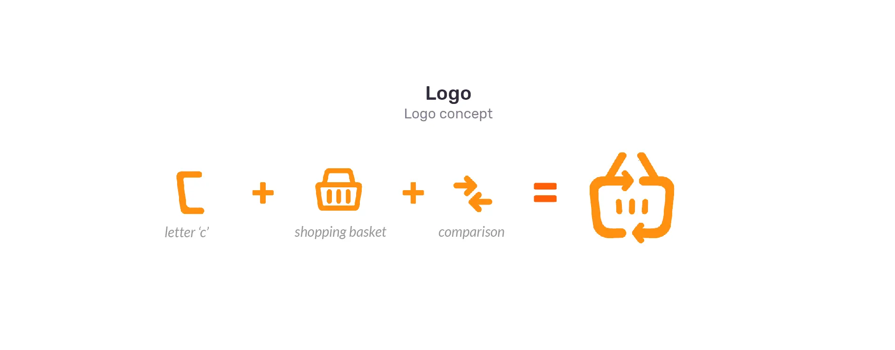
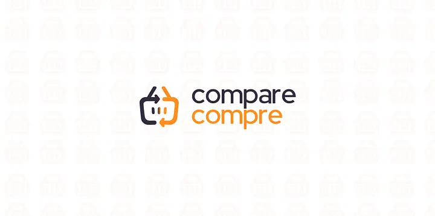
Cores, Tipografia, Componentes e Ícones
Após validar os fluxos principais, criamos os guias visuais do projeto. O amarelo foi escolhido para representar o dinamismo e a energia do app de compras, enquanto o roxo traz contraste, confiança e modernidade.
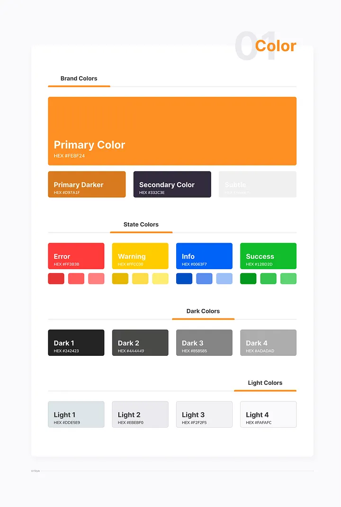
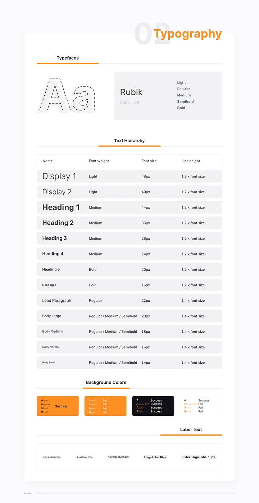
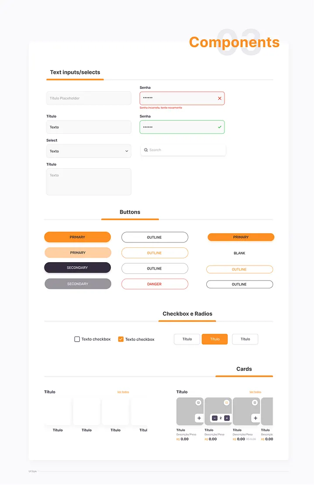
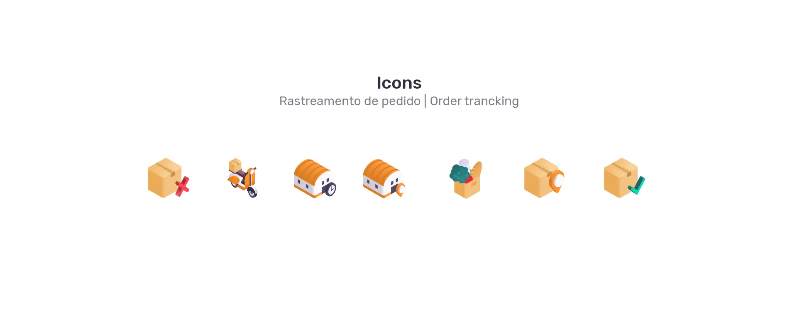
Um delivery para comprar melhor
O resultado foi um protótipo mobile completo para cliente e entregador, com identidade visual, styleguide e interfaces de alta fidelidade. O projeto seguiu para desenvolvimento, mas o cliente não deu continuidade. Mesmo assim, foi um case importante para consolidar aprendizados em produto digital, delivery, comparação de preços e criação de uma experiência de compra mais econômica.
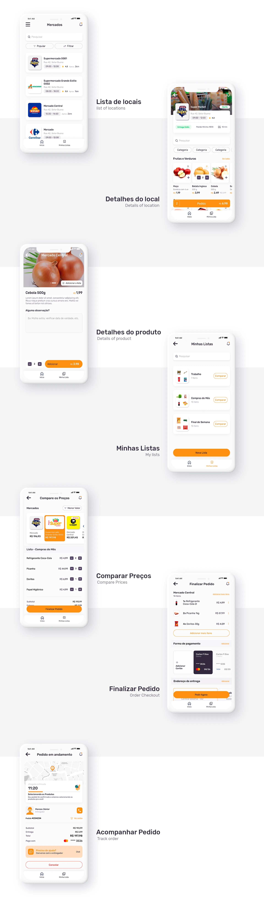